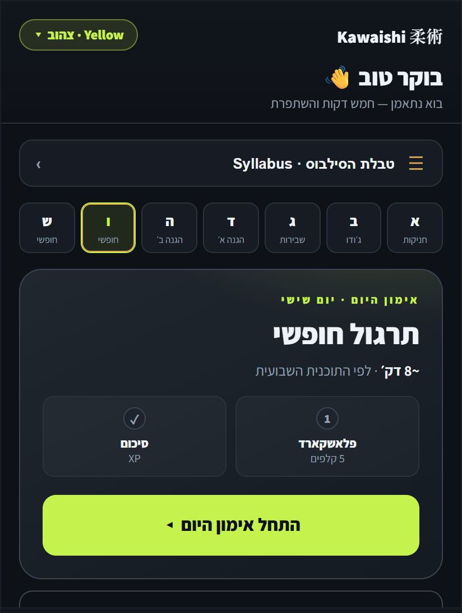
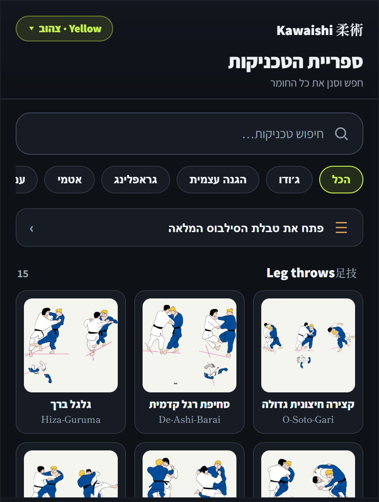
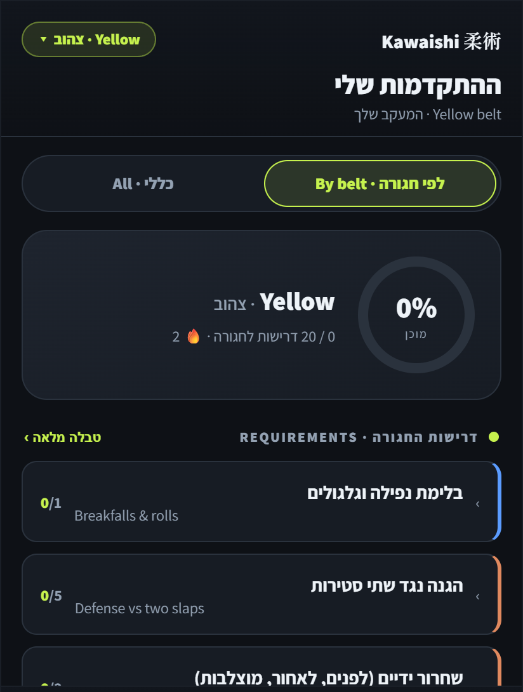

JJJ Study App
A trilingual Ju-Jitsu training and belt-exam-prep app I designed and built for my dojo — daily training sessions built from a weekly plan, an illustrated technique library, and belt-graded progress mapped to the real exam requirements, plus shadow-training, weak-point drills, XP and daily streaks. It started as a trilingual flashcard trainer ("JJJ Study App", formerly "Judo Names Teacher"), and I've since rebuilt it from the ground up into "Kawaishi Ju-Jitsu". Everything is trilingual — Japanese (kanji + romaji) · English · Hebrew. I designed it, built it (AI-assisted, from basic coding) and shipped it as an installable, offline PWA.



Daily training · illustrated technique library · belt-graded exam prep — running as an installable, offline PWA.
Role
Designer & Developer (solo)
Timeline
Side project
Tools
PWA · AI-assisted build
The problem
Why it exists
A Ju-Jitsu belt syllabus is a lot to hold in your head — not just the technique names, but how each one is executed and the specific requirements you're tested on at every belt — all across Japanese (kanji + romaji), English and Hebrew, and usually scattered across notes and a syllabus sheet. I wanted a single, friendly tool my dojo would actually use: to learn the techniques, follow a plan, and know exactly what each grading asks for.
Design
A training app in three parts
Straight game-design thinking applied to learning, built around three screens. A daily Training flow, sized to a weekly plan with a clear start and finish, so there's always one obvious thing to do next — plus shadow-training (solo self-defense drilling) and weak-point practice for the techniques you keep missing. An illustrated Library, organized by the Kawaishi method's technique families with search, category filters and video, so any technique is a tap away. And belt-graded Progress that mirrors the real exam — a readiness ring toward your next belt and a checklist of that grade's actual requirements. Gentle gamification (XP, daily streaks and flashcards) keeps it motivating without punishing, and it's trilingual throughout (Japanese · English · Hebrew), with careful attention to correct naming; a near-black UI with a single lime-green accent.
Build
Designing + shipping it myself
I designed, built and shipped it myself — AI-assisted, from basic coding — as an installable, offline PWA that updates whenever I ship a change. It's the same end-to-end instinct I bring to game work: own a feature from concept to a real thing people can use.
Outcome
Results
The earlier version — a trilingual flashcard trainer — really caught on at my dojo after my own first belt exam: prepping with it showed in the results, and students started picking it up for their own gradings. Kawaishi Ju-Jitsu is the ground-up rebuild of that idea into a complete training and exam-prep tool, newly shipped and now rolling out to the mat. It's the study companion I wish I'd had while learning the syllabus — and the same end-to-end instinct I bring to game work: take a real need, design the system around it, and ship something people actually use.